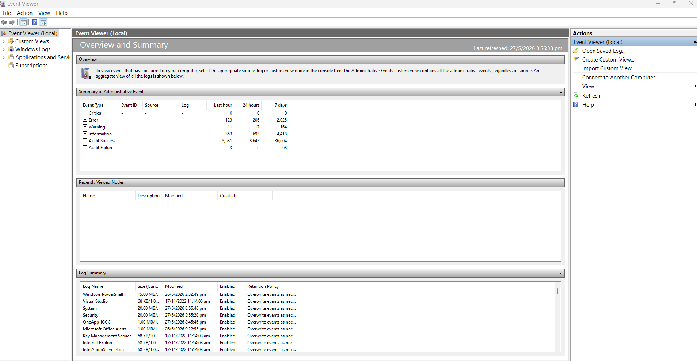
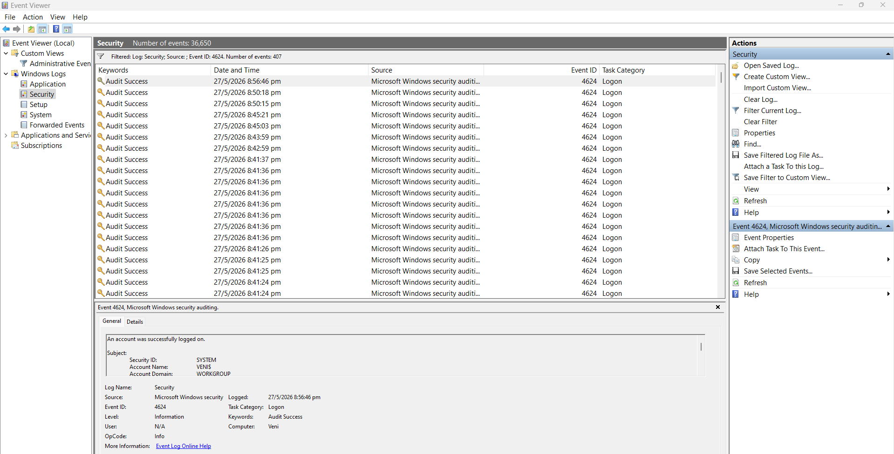
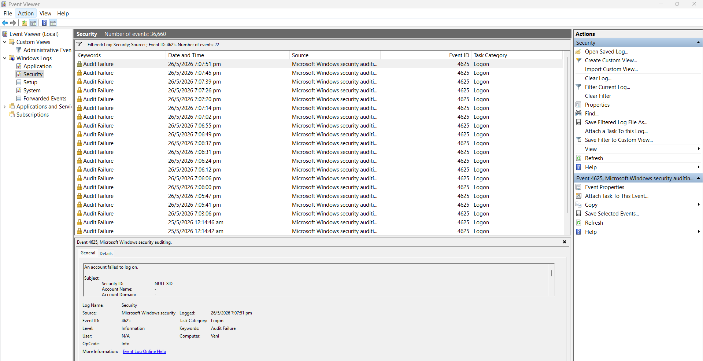
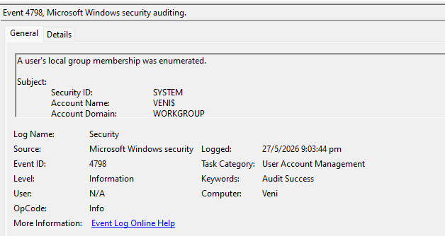
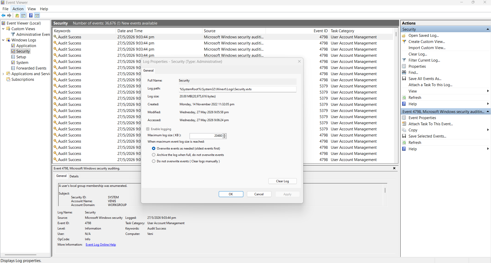

Project 05 / Digital Forensics Investigation
Conducted digital forensics investigation and analysed Windows Security events.
A cybersecurity portfolio project focused on Windows Security log analysis, authentication monitoring, event investigation, and forensic evidence collection.
Project Overview
Windows Security log investigation and forensic analysis.
A digital forensics investigation was conducted to analyse system activity and identify potential suspicious behaviour within a Windows environment. Windows Event Logs, authentication records, and security events were examined to reconstruct user activity and investigate security-related events.
Open Event Viewer
Access Security Logs
Filter Event IDs
Analyse authentication events
Review timestamps and accounts
Document investigation findings
Tools Used
Technologies and tools used during the investigation.
Investigation Tools
Windows Event Viewer
Windows Security Logs
Windows Operating System
Investigated Event IDs
4624 - Successful Logon
4625 - Failed Logon
4798 - User Account Enumeration
Investigation Analysis
Security event investigation using Windows Event Viewer.
Windows Security Logs were analysed to identify successful and failed authentication events, user account activity, and security-related system events relevant to forensic investigation.
Event IDs Investigated: 4624 - Successful Logon 4625 - Failed Logon 4798 - User Account Enumeration Investigation Focus: Authentication activity Audit success and failure events User account analysis Timeline reconstruction
Evidence Gallery
Screenshots and forensic evidence collected during the investigation.





Investigation Findings
Security events and authentication activity successfully analysed.
Authentication Analysis
Analysed successful and failed authentication events using Windows Security Event Logs.
Event Investigation
Investigated user account activity and security-related system events within the Windows environment.
Forensic Evidence Collection
Collected and reviewed forensic evidence including timestamps, event details, and audit records.
Investigation Results
Digital forensics investigation completed successfully.
Investigation Component
Outcome
Security Log Analysis
Successfully reviewed Windows Security events
Authentication Investigation
Successful and failed login events identified
User Activity Analysis
User account activity investigated successfully
Investigation Status
Digital forensic investigation completed
Skills Demonstrated
Digital Forensics Investigation
Conducted forensic analysis using Windows Event Viewer and Security Logs.
Security Log Analysis
Analysed authentication events and security-related activity.
Evidence Collection
Collected forensic evidence including timestamps and event records.
Incident Investigation
Investigated user account activity and authentication failures.